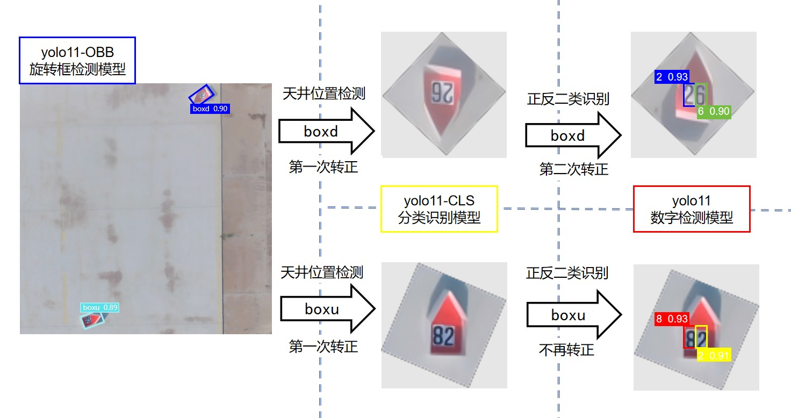
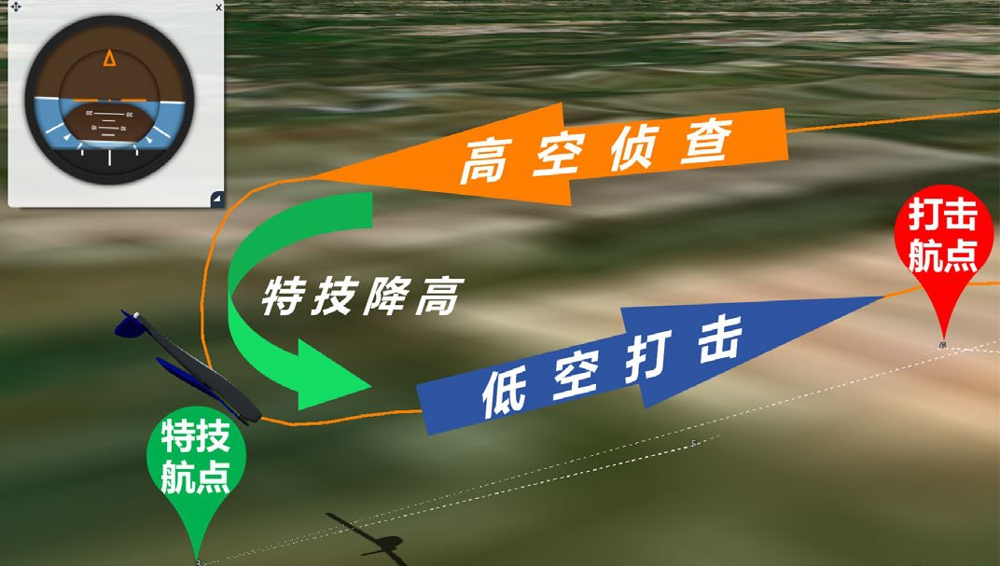
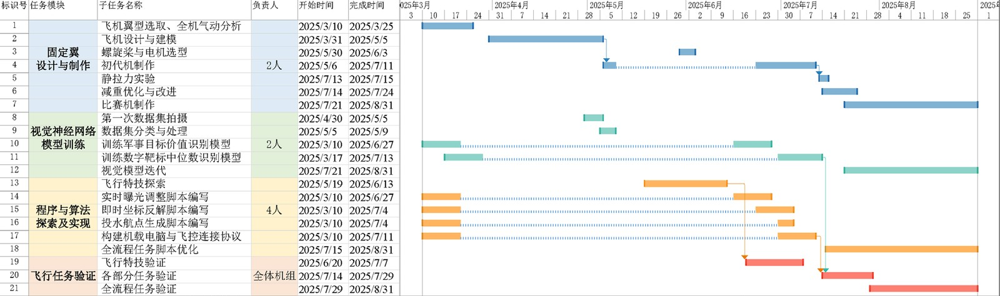

Biography
I am an undergraduate in Robotics Engineering at the Beihang University (Class of 2027), and an incoming engineering doctorate student in Artificial Intelligence & Big Data at the Renmin University of China (2027 intake).
My research interest is embodied intelligence — how a model turns what it sees and what it is told into physical action. Concretely I am working through vision-language-action (VLA) models, vision-language models (VLM) as the perception-and-reasoning backbone, world models for prediction and planning, and multimodal perception that fuses vision, language and proprioception into one representation. What draws me to this line is the gap between a model that describes the world and a model that acts in it under latency, embodiment and real-world noise.
I come from the deployment side of that problem. Across three national-level student teams — CUADC (fixed-wing UAV, national 2nd prize), ROBOCON (basketball robot, national 1st prize) and the National Intelligent Car Contest — I built perception-to-control loops that had to run on a 15 W on-board computer in flight: dataset construction, YOLO-series detection / classification / rotated-box training, TensorRT FP16 quantisation, CUDA multi-stream inference, EKF state estimation, PCB design, flight tests. That engineering base is what I bring into embodied-AI research: I care whether an idea survives contact with real hardware.
Research Interests
Embodied Intelligence
Closing the loop between perception, reasoning and action on physical platforms; sample efficiency and robustness when the world pushes back.
Vision-Language-Action Models
Generalist policies that map instructions and observations to motor commands; action tokenisation, cross-embodiment transfer, data mixtures for manipulation.
Vision-Language Models
VLM as the perception-and-reasoning backbone for robots: grounding, spatial reasoning and instruction following under real sensor noise.
World Models
Learned predictive models for planning and imagination — action-conditioned video / dynamics prediction, and how to keep long-horizon rollouts faithful.
Multimodal Perception
Fusing vision, language, depth and proprioception; representation alignment across modalities and sensor-fusion state estimation on edge devices.
Edge Deployment for Robot Learning
The systems side I already work on: quantisation, multi-stream inference and latency budgets when large policies must run on a Jetson-class computer.
Recent News
- Nov 2026: 怀客松 2026 具身智能赛道 — lingyu-teleavatar-2：「危境取物」，一个手势下令，TA2 机器人取回危险品并交到操作员手上。
- Nov 2026: Personal homepage launched. Portfolio slides and the full CUADC design report are now on GitHub.
- Oct 2026: Admitted to the engineering doctorate program (AI & Big Data) at Renmin University of China, starting Sept 2027.
- Oct 2025: CUADC national finals — fixed-wing UAV reconnaissance & strike, national 2nd prize (3rd place overall).
- Jul 2025: ROBOCON China — basketball robot, national 1st prize.
- Jul 2025: 19th National Intelligent Car Contest — electromagnetic group, regional 2nd prize.
- May 2025: First-author paper accepted at the 2nd Beihang Fengru Cup Innovation Competition (2nd prize).
- May 2024: First-author paper accepted at the 1st Beihang Fengru Cup Innovation Competition (2nd prize).
- Oct 2023: 15th National Mathematics Competition (non-math, group A) — national 2nd prize.
Publications & Patents
Open Source
Projects & Engineering Experience
The hardware-and-deployment side of my work — the base I am building on for embodied-AI research.




Education & Awards
- ROBOCON — National Collegiate Robot ContestNational 1st Prize2025.07
- CUADC — China Universities Aircraft Design CompetitionNational 2nd Prize2025.10
- National Intelligent Car Contest — electromagnetic groupRegional 2nd Prize2025.07
- Beihang Fengru Cup — production group (first author)2nd Prize × 22024 & 2025
- National Mathematics Competition — non-math, group ANational 2nd Prize2023.10
- Beihang Academic Competition Scholarship1st Prize2024–25